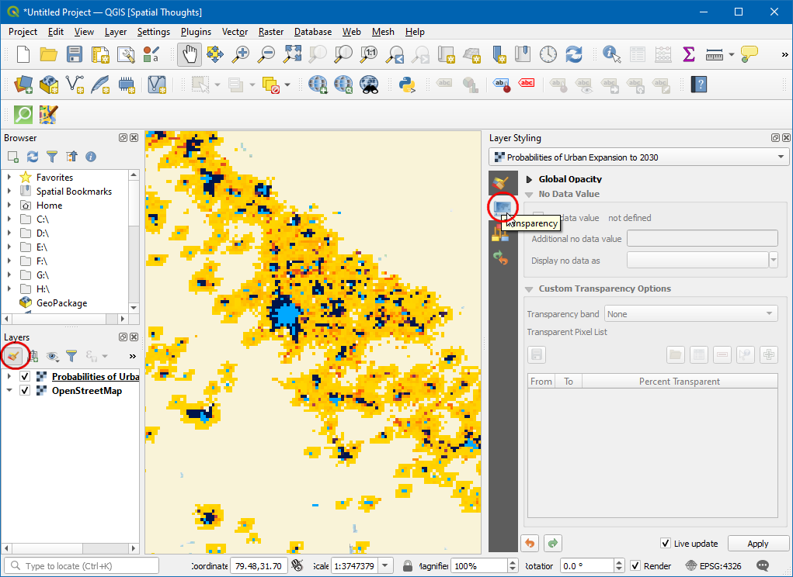
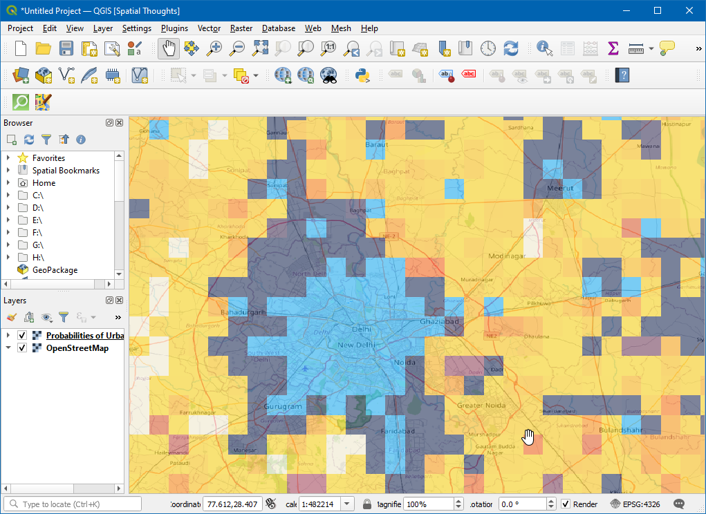

Ujaval Gandhi
Ujaval GandhiRad sa WMS podacima (QGIS3)¶
Često su vam potrebni slojevi referentnih podataka za vašu osnovnu mapu ili za prikazivanje rezultata u kontekstu drugih skupova podataka. Mnoge organizacije objavljuju skupove podataka na mreži koji se mogu lako koristiti u GIS-u. Popularni standard za objavljivanje mapa na mreži naziva se WMS (Web Map Service). Ovo je bolji izbor za korišćenje referentnih slojeva jer dobijate pristup bogatim skupovima podataka u vašem GIS-u bez muke oko preuzimanja ili stilizovanja podataka.
Упозорење
SEDAC servisi trenutno migriraju i nisu dostupni. Ažuriraćemo vodič kada migracija bude završena. U međuvremenu, možete pratiti vodič koristeći alternativni WMS servis, kao što je NLCD Landcover WMS https://www.mrlc.gov/geoserver/NLCD_Canopy/wms?SERVICE=WMS&REQUEST=GetCapabilities
Pregled zadatka¶
U ovom tutorijalu, učitaćemo WMS sloj „Urbano širenje do 2030. godine <https://sedac.ciesin.columbia.edu/data/set/lulc-global-grid-prob-urban-expansion-2030>”_ koji je objavio Centar za socioekonomske podatke i primene (SEDAC).
Druge veštine koje ćete naučiti¶
Kako podesiti transparentnost sloja i dodati vidžet klizača za kontrolu neprozirnosti u QGIS-u.
Dobijte podatke¶
Posetite „Globalnu mrežu verovatnoća urbane ekspanzije“ koju je objavio SEDAC <https://sedac.ciesin.columbia.edu/data/set/lulc-global-grid-prob-urban-expansion-2030>, ovi podaci sadrže verovatnosne prognoze globalne promene urbanog zemljišnog pokrivača od 2000. do 2030. godine sa rezolucijom od 2,5 lučnih minuta. Kliknite na Map servisi.
Kopirajte URL adresu WMS servisa. Ovo je URL adresa WMS servisa koji hostuje sloj podataka.
Procedura¶
Otvorite KGIS i kliknite na Otvori Menadžer izvora podataka.

U dijaloškom okviru Data Source Manager pređite na WMS/WMTS, kliknite na Novo.

U dijaloškom okviru Kreiraj novu WMS/WMTS vezu pod Detalji veze unesite Naziv kao
SEDACi nalepite kopirani URL u polje za tekst URL. Kliknite na U redu. Ako dobijete grešku sa kopiranim URL-om, pokušajte sa alternativnim URL-omhttps://sedac.ciesin.columbia.edu/geoserver/ows.
Белешка
Kreirate novu vezu sa WMS servisom - ne sa određenim slojem. Jedan servis obično nudi više slojeva koji se mogu dodati vašem projektu.
Sada u dijaloškom okviru Data Source Manager kliknite na Connect. Svi dostupni slojevi će biti učitani. Primetićete različite ID-ove navedene pored slojeva. ID
0znači da dobijate mapu svih slojeva. Ako ne želite sve slojeve, možete proširiti listu klikom na ikonu ▸ i odabirom sloja koji vas zanima.
Za ovaj tutorijal, zanima nas određeni sloj. Potražite „Verovatnoće urbanog širenja do 2030.“ Izaberite podrazumevanu verziju sloja urbanog širenja 2030. godine.

U odeljku Kodiranje slike, potrebno je da izaberete format slike. Format slike je važan i zavisi od slučaja upotrebe. Na osnovu korisničke perspektive, evo nekoliko smernica,
Kvalitet: Kompresija datoteka za PNG je bez gubitaka, za JPEG je kompresija sa gubicima, a TIFF može biti bilo koji. To znači da će kvalitet PNG datoteka biti bolji u poređenju sa JPEG-om. Ako vam je glavna namena štampanje mape, koristite PNG.
Brzina: Pošto PNG slike nisu kompresovane i samim tim su veće veličine, potrebno je duže vreme za njihovo učitavanje. Ako koristite sloj u svom projektu kao referentni sloj i potrebno je mnogo zumiranja/pomeranja, koristite JPEG.
Podrška klijentima: QGIS podržava većinu formata, ali ako razvijate veb aplikacije, pregledači obično ne podržavaju TIFF, pa bi trebalo da izaberete drugi format.
Tip podataka: Ako su vaši slojevi prvenstveno vektorski, PNG će dati bolje rezultate. Za slojeve slika, JPEG je obično bolji izbor.
Za ovaj tutorijal, izaberite PNG kao format. Promenite Naziv sloja ako želite i kliknite na Dodaj.

Sada će se na platnu učitati sloj Verovatnoće urbane ekspanzije do 2030. godine. Koristite alate za zumiranje/pomeranje da biste istražili sloj. WMS servis funkcioniše tako što svaki put kada zumirate/pomerate, on šalje koordinate vašeg prikaznog okvira serveru, a server kreira sliku za taj prikazni okvir i vraća je klijentu. Dakle, doći će do izvesnog kašnjenja pre nego što vidite sliku za područje nakon što ste zumirali. Stoga je za pristup ovom sloju uvek potrebna internet veza.

Sada, zumirajte na bilo koje poznato mesto i kliknite na ikonu Identifikuj karakteristike u traci sa alatkama.

Kliknite na bilo koji piksel na platnu, pojaviće se dijaloški prozor sa vrednošću ćelije. Ovo je vrednost piksela u sloju - koja predstavlja verovatnoću da će piksel biti urbanizovan do 2030. godine. Pošto se sloj ne čuva lokalno, ove vrednosti se preuzimaju od dobavljača usluge. Rezultate možete bolje videti izborom Format kao
HTMLi View kaoTree.
Белешка
Informacije se preuzimaju pomoću GetFeatureInfo, to je standardni WMS poziv koji nam omogućava da preuzmemo informacije o objektima i pokrivenostima prikazanim na mapi. Ako je mapa sastavljena od različitih slojeva i GetFeatureInfo može biti naloženo da vrati više opisa objekata, HTML/GeoJSON je uobičajeni format datoteke u kojem se informacije preuzimaju.
Da biste videli dodatne informacije o sloju, kliknite desnim tasterom miša na sloj i izaberite Properties….

U dijaloškom okviru Svojstva sloja, pređite na karticu Informacije gde se mogu pronaći sve informacije kao što su dobavljač podataka, projekcije, obim. Kliknite na U redu da biste zatvorili dijaloški okvir nakon istraživanja.

U QGIS Browser, potražite XYZ Tiles i kliknite i prevucite
OpenStreetMapna platno.
Kliknite na ikonu Otvori panel za stilizovanje slojeva i prebacite se na Transparentnost.
Postavite Globalna neprozirnost na
50 %
Sada na platnu, sloj Urbani se može istražiti sa geografskom referencom.
Da biste dobili više pristupa transparentnosti sloja, kliknite desnim tasterom miša na sloj i izaberite Properties….

U dijaloškom okviru Svojstva sloja, pređite na karticu Legenda, pod Dostupni vidžeti izaberite
Klizač neprozirnostii kliknite na ikonu Dodaj izabrane vidžete. Kliknite na U redu.
Sada će biti dostupan klizač za kontrolu neprozirnosti sloja.

If you want to give feedback or share your experience with this tutorial, please comment below. (requires GitHub account)